1056B multi-point injection system (mpi)
- Path
- Descriptions > 10 ENGINE UNIT > 1056 PETROL INJECTION SYSTEM > 1056B multi-point injection system (mpi)
- Kind
- system description
- Applies to
- engines: 1.6 16v; all production periods
- Interactive page
- https://sloeber94.github.io/elrnDB-fMltpl/en/#/2888229
Applies to: engines: 1.6 16v; all production periods
The Marelli IAW 49F system belongs to the category of systems integrated with:
- inductive discharge digital electronic ignition
- distributorless
- sequential, phased electronic injection (1-3-4-2).
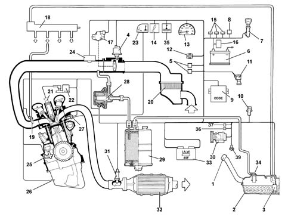
1, Safety and ventilation valve 2, Fuel tank 3, Electric fuel pump 4, Idle speed actuator 5, Radiator fan high and low speed relay feeds 6, Battery 7, Ignition switch 8, Injection system relay 9, Fiat CODE control unit 10, Inertia switch 11, Vehicle speed sensor 12, Diagnostic socket 13, Rev counter 14, Injection system failure warning light 15, Fuses protecting injection/ignition system 16, General protective fuse box 17, Butterfly valve position sensor 18, Fuel supply manifold 19, Injectors 20, Air filter 21, Spark plugs 22, Ignition coils 23, Engine coolant temperature gauge 24, Air temperature and pressure sensor 25, Rpm and T.D.C. sensor 26, Detonation sensor 27, Coolant temperature sensor 28, Fuel vapour solenoid valve 29, Active charcoal filter 30, Climate control compressor 31, Lambda sensor 32, Catalytic silencer 33, Injection/ignition control unit 34, Multi-purpose valve 35, Engine coolant overheating warning light 36, Climate control compressor relay 37, Climate control system relay
Applies to: all engines; all production periods
Applies to: engines: 1.6 16v; all production periods
OPERATION OF THE FUEL INJECTION-IGNITION
During idling, the control unit checks:
- the ignition instant
- air flow
with the benefit of maintaining correct operation of the engine when the environmental parameters and the applied loads vary.
The control unit controls and manages fuel injection so that the stoichiometric ratio (air/fuel) is always at the optimum value.
The system's functions are basically as follows:
- system self-adaptation
- autodiagnosis
- recognition of FIAT CODE
- control of cold starting
- check on combustion - Lambda probe
- control of detonation
- control of enrichment during acceleration
- fuel cut-off during overrunning
- fuel vapour recovery
- limitation of maximum rpm
- check on fuel-electric fuel pump supply
- connection to the climate control system
- recognition of cylinder position
- regulation of fuel injection times
- adjustment of ignition advance values
- check and management of idle speed
- check on electric cooling fan
Injection system
The essential conditions that must always be met in the preparation of the air-fuel mixture for the correct operation of controlled-ignition engines are mainly:
- the 'metering' (air/fuel ratio) must constantly be kept as close as possible to the stoichiometric ratio, so as to ensure the necessary rapidity of combustion, avoiding unnecessary fuel consumption
- the 'homogeneity' of the mixture, consisting of petrol vapours, diffused as finely and evenly as possible in the air.
The injection/ignition system uses an indirect measuring system known as the 'SPEED DENSITY LAMBDA' type. In other words the angular rotation speed, density of the intake air and control of the mixture strength.
In practice the system uses data on the ENGINE SPEED (rpm) and AIR DENSITY (pressure and temperature) to measure the quantity of air drawn in by the engine.
The quantity of air drawn in by each cylinder, for each engine cycle depends not only on the density of the intake air, but also on the unit displacement and the volumetric efficiency.
The density of the air refers to that of the air drawn in by the engine and calculated according to the absolute pressure and the temperature, both detected in the inlet manifold.
Volumetric efficiency refers to the parameter relating to the coefficient for filling the cylinders measured on the basis of experimental tests carried out on the engine throughout the entire operating range and then stored in the electronic control unit memory.
Having established the quantity of intake air, the system has to provide the quantity of fuel according to the desired mixture strength.
The end of injection pulse or supply timing is contained in a map stored in the control unit memory and varies according to the engine speed and the pressure in the inlet manifold. In practice, it involves processing which the electronic control unit carries out to command the sequential, phased opening of the four injectors, one per cylinder, for the length of time strictly necessary to form the air/petrol mixture which is closest to the stoichiometric ratio.
The fuel is injected directly into the manifold near the inlet valve at a pressure of around 3 bar.
Whilst the speed (rpm) and the density of the air (pressure and temperature) are used to measure the quantity of intake air, which when established allows the quantity of fuel to be metered according to the desired mixture strength, the other sensors in the system (coolant temperature, butterfly valve position, battery voltage, etc.) allow the electronic control unit to correct the basic strategy for all engine operating conditions.
It is vital for the air/fuel ratio to be around the stoichiometric value for the correct and prolonged operation of the catalytic silencer and for the reduction of pollutant emissions.
Ignition system
The ignition is the inductive discharge type, i.e. without a high tension distributor, with power modules located in the electronic injection/ignition control unit.
The system has two high tension twin outlet coils joined in a single container and connected directly to the spark plugs.
The primary winding for each coil is connected to the power relay (thereby receiving the battery voltage) and to the pins for the electronic control unit for connection to earth.
After the starting stage, the electronic unit manages the basic advance taken from a special map according to the:
- engine rotation speed
- absolute pressure value (mmHg) measured in the inlet manifold.
This advance value is corrected according to the temperature of the engine coolant and the intake air.
The spark plugs for cylinder 1-4 and 2-3 are connected directly (two at a time) by means of high tension leads to the terminals of the coil secondary winding and their connection is in series because the cylinder head joins them. This solution is also known as the 'lost spark' becuse the energy accumulated by the coil is almost exclusively discharged at the electrodes for the spark plug of the cylinder under compression allowing the ignition of the mixture. The other spark is obviously not used, as no mixture is found in the cylinder to ignite, only exhaust gas.
OPERATION
Diagram of input/output information from the control unit
-
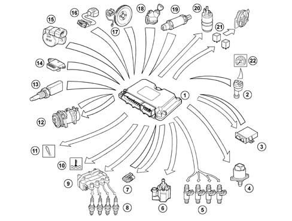
1, Electronic control unit 2, Speedometer sensor 3, Fiat CODE control unit 4, Engine idle speed actuator 5, Fuel injectors 6, Fuel vapour solenoid valve 7, Diagnostic socket 8, Spark plugs 9, Ignition coils 10, Engine coolant overheating warning light 11, Injection failure warning light 12, Climate control system 13, Engine coolant temperature sensor 14, Intake air temperature and pressure sensor 15, Butterfly valve position sensor 16, Detonation sensor 17, Rpm and TDC sensor 18, Ignition switch 19, Lambda sensor 20, Electric fuel pump 21, Radiator fan high and low speed relay feeds 22, Speedometer / milometer
OPERATING LOGICS
Self-adaptation of the system
The control unit has a self-adaption function which recognizes changes in the engine which occur as a result of bedding-in and ageing processes of both components and the engine itself.
These changes are stored in the form of modifications to the basic mapping, and their purpose is to adapt the operation of the system to the gradual alterations in the engine and components compared with their characteristics when new.
This self-adaptation function also makes it possible to even out inevitable differences (due to production tolerances) in any replaced components.
From the exhaust gas analysis, the control unit changes the basic mapping in relation to the original characteristics of the new engine
The self-adaptation parameters are not cancelled if the battery is disconnected.
Self-diagnosis
The system has an autodiagnostic function which recognizes, memorizes and signals any failures.
If a fault is detected at the sensors or actuators, the signal reconstruction strategies (recovery) are immediatedly activated to guarantee the operation of the engine at an acceptable level without adverse effects. The vehicle can therefore be driven to a service centre for repair.
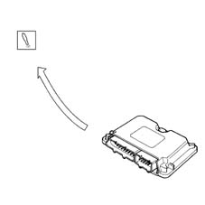
Recognition of fiat code
When the control unit receives the ignition 'ON' signal, it dialogues with the Fiat CODE control unit to obtain starting enablement.
Communication takes place via the dedicated bidirectional serial diagnostic line which connects the two control units.
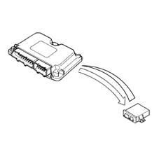
Starting and post-starting
During starting it is not possible to instantly recognize the engine timing and consequently it is not possible to implement the timed injection for the first injection for each cylinder.
When the engine is first running an initial simultaneous (full-group) injection is carried out because the considerable fluctuations in the rotation speed do not allow the correct calculation of the injection stage; it is only later that the injection becomes phased.
There is no timing sensor and the correct operation of the sequential-phased system is ensured by the 'software timing sensor' function.
This term refers to a collection of processes which the engine control unit carries out to reconstruct the missing signal and ensure the correct 'square signal':
- memorizing the last cylinder in the inlet stroke when the engine is switched off;
- confirming the correct 'timing' within 5 seconds of starting and periodically during normal engine operation, by occasionally suppressing the petrol at one injector only.
The 'basic' injection time is increased by a multiplication coefficient for the entire time the engine is driven by the starter motor.
After starting, the coefficient is gradually reduced until it disappears within a certain period; the lower the engine temperature, the longer this period.
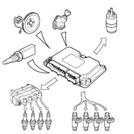
Operation when cold
Under these circumstances there is a natural weakening of the mixture because of the poor turbulence of the fuel particles at low temperatures, reduced evaporation and condensation on the inner walls of the inlet manifold, all of which is exacerbated by the increased viscosity of the lubricant oil which, as is well known, increases the rolling torque of the engine mechanical components at low temperatures.
The electronic control unit recognizes this condition on the basis of the coolant temperature signal, increasing the basic injection time.
Whilst the engine is warming up, the electronic control unit also operates the stepping motor which determines the quantity of air needed to ensure that the engine does not cut out.
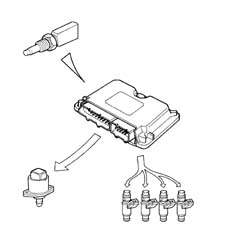
Operation in full load conditions
Operation in full load conditions is detected, by the control unit, through the values supplied by the butterfly position and absolute pressure sensors.
In full load conditions, the basic injection time must be increased to obtain the maximum power supplied by the engine.
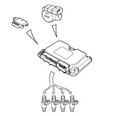
Operation in deceleration conditions
During this stage the engine has two strategies:
- A negative, transitory strategy to keep the quantity of fuel supplied to the engine at the stoichiometric value (less pollution). This stage is recognized by the control unit when the butterfly potentiometer signal goes from a high voltage reading to a lower one.
- A soft accompaniment strategy at the lower speed (dash-pot) to lessen the variation in the torque supplied (reduced engine braking).
The atmospheric pressure varies according to the altitude creating a variation in the volumetric efficiency which requires the correction of the basic mixture strength (injection time).
The correction of the injection time depends on the variation in altitude and is automatically updated by the electronic control unit each time the engine is switched off and in certain butterfly position and rpm conditions (typically at low speeds and with the butterfly wide open) (dynamic adjustment of barometric correction).
The cut-off strategy is implemented when the control unit recognizes the butterfly valve in the idle position (butterfly potentiometer signal) and the engine speed exceeds 1350 rpm. The control unit only enables the cut-off when the engine temperature exceeds 0° C.
The recognition of the butterfly valve in a non closed position or the engine speed below 1270 rpm enables the supply to the engine.
For very high speeds the cut-off is implemented even when the butterfly is not completely closed, but when the pressure in the inlet manifold is particularly low (partial cut-off).
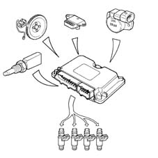
Operation in acceleration conditions
During this stage, the control unit increases the quantity of fuel requested by the engine as appropriate (to achieve maximum torque) according to the signals coming from the following components:
- butterfly potentiometer;
- Rpm and T.D.C. sensor
The 'basic' injection time is multiplied by a coefficient which depends on the temperature of the engine coolant, the opening speed of the accelerator butterfly and the increase in pressure in the inlet manifold.
If the sharp variation in the injection time is calculated when the injector is already closed, the control unit reopens the injector (extra pulse) in order to compensate the mixture strength extremely quickly; the subsequent injections are already increased on the basis of the coefficients mentioned previously.
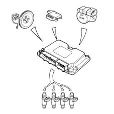
Protection against excess rpm
When the engine rotation speed exceeds 6700 rpm for more than 10 seconds or reaches the 'limit' of 6900 rpm, set by the manufacturer, the engine finds itself operating in 'critical' conditions.
When the electronic control unit recognizes that the above speed has been exceeded, it prevents the operation of the injectors.
When the rotation speed returns to a non critical value, the operation is resumed.
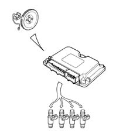
Electric fuel pump operation
The electric fuel pump is controlled by the engine control unit by means of a relay.
The pump cuts out:
- if the engine speed goes below about 50 rpm
- after a certain period (about 5 seconds) with the ignition switch in the ON position without the engine being started up (timed go ahead)
- if the inertia switch is operated.
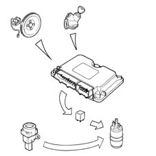
Injector operation
The operation of the injectors is the sequential, phased type. However, during starting the injectors are operated once in parallel (full-group).
The timing of the injector operation varies according to the engine speed and pressure of the inlet air in order to improve the filling of the cylinders with advantages in terms of consumption, driveability and pollution.
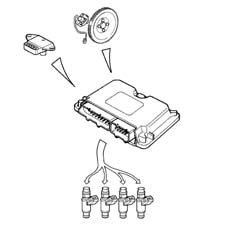
Control of knock
The control unit detects the presence of knocking by processing the signal coming from the relevant sensor. The strategy continuously compares the signal coming from the sensor with a threshold value, which, in turn, is continuously updated to take account of background noise and ageing of the engine.
If the system recognizes the presence of detonation, the strategy reduces the ignition advance until the phenomenon disappears. Later, the advance is gradually restored to the basic value or until the phenomenon occurs again. In particular, advance increases are implemented gradually, whilst reductions are implemented immediately.
Under acceleration conditions, a higher threshold is used to take account of the increased engine noise under such conditions.
The strategy also features a self-adaptation function which temporarily memorizes the reductions in the advance that may be continuously repeated, in order to adjust the advance to the different engine operating conditions (for example, the use of a low octane rating fuel). The strategy is capable of restoring the advance to the threshold value memorized when the conditions which have caused the reduction no longer exist.
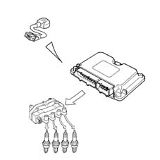
Management of radiator fan
The control unit directly controls the operation of the radiator fan according to the temperature of the engine coolant and the engagement of the climate control system.
The fan is switched on when the temperature exceeds 98°C (1st speed) and 101°C (2nd speed). The switching off takes place with a hysteresis of 2°C below the engagement threshold.
The high and low speed functions are managed by the intervention of special relays in the climate control system control unit and are operated by the control unit.
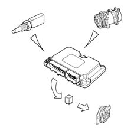
Management of the engine idle
The general aim of this strategy is to keep the engine idling at around the value memorized (engine warm: 850 rpm); the position of the actuator depends on the following engine conditions:
- Starting stage
When the key is inserted, the position of the actuator depends on the temperature of the engine coolant and the voltage of the battery (open-loop position).
- Warming up stage
The engine speed is corrected, particularly on the basis of the engine coolant temperature.
With the engine at operating temperature, the management of the idle depends on the signal coming from the rpm sensor. when external loads are switched on, the control unit manages the supported idle.
- Deceleration stage
In deceleration conditions outside of idling, the control unit controls the position of the engine idle speed actuator by means of a special flow rate curve (dash-pot curve), in other words it slows down the return of the shutter towards its seating, improving the engine braking effect (fast idle).
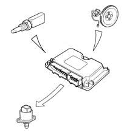
Management of fuel vapour recirculation
This strategy controls the position of the vapour cut out solenoid valve in the following way:
- during starting the solenoid remains closed, preventing the fuel vapours from enriching the mixture; this condition persists until the temperature of the coolant temperature reaches 65° C.
- with the engine at operating temperature, the electronic control unit sends the solenoid valve a square wave signal (duty-cycle operation) and the opening is modulated.
In this way the control unit controls the quantity of fuel vapours sent to the inlet, preventing considerable variations in the mixture strength.
In the operating conditions listed below:
- butterfly valve in closed position
- engine speed below 1500 rpm
- inlet manifold pressure below the limit calculated by the control unit depending on the number of revs,
the operation of the solenoid valve is inhibitied, maintaining the same closed position; this improves engine operation.
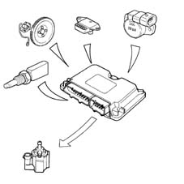
Management of the climate control system
The injection/ignition control unit is connected to the climate control system in that:
- it receives the request to switch on the compressor and operate the related interventions (additional air);
- it gives the go ahead to switch on the compressor, when the conditions covered by the strategies have arisen;
- it receives information on the state of the four stage pressure switch and makes the appropriate interventions (radiator fan operation).
If the engine is idling, the control unit increases the flow rate of the air passing from the idle actuator before the compressor is switched on and, viceversa, it returns the actuator to the normal position after the compressor is switched off.
The control unit automatically controls the disengagement of the compressor:
- at engine coolant temperatures above a certain level
- at engine speeds below 750 rpm.
The control unit temporarily controls the disengagement of the compressor (for a few seconds):
- during high power requests from the engine (strong acceleration)
- during engine pick-up:
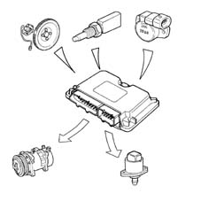
RECOVERY
Air temperature sensor
If the error is present during starting:
- it assumes a value of 50 °C
- the self-adjustment of the mixture strength is inhibited
If the error is present in other conditions:
- the last valid value is memorized and updated according to the coolant temperature
Detonation sensor
If the sensor is faulty, the engine control unit implements more conservative ignition advance 'maps' to safeguard the engine
Lambda sensor
In the case of a failure, the information transmitted is ignored and the system operates in open-loop
Pressure sensor
If the failure is present during starting, it uses a value of 1024 mbar. During operation a value, calculated on the basis of parameters supplied by the butterfly valve position sensor and the rpm sensor, is used. Self-adjustment of the mixture strength is inhibited
Butterfly valve position sensor
In the case of a fault, a value calculated from the absolute pressure sensor readings is set, and if this sensor is broken, a fixed value equal to a butterfly opening of 50° is set. The mixture strength and idle self-adjustment dash-pot strategies are suspended.
Vehicle speed sensor
The control unit uses the last vehicle speed value memorized when there was no error.
Coolant temperature sensor
In the case of a failure the ECU inhibits the self-adjustment of the mixture strength and idle. It sets the last temperature value measured; If this does not correspond, the ECU increases it gradually according to the time since the engine was started up until it reaches 80 °C. The radiator cooling fan is operated.
Engine idle speed actuator
In the event of a fault, the operation of the actuator is disabled and self-adjustment of the idle mixture strength is stopped.
IAW 49F INJECTION/IGNITION CONTROL UNIT
The engine unit is fitted in the engine compartment and is capable of withstanding high temperatures.
It is a digital type with a microprocessor, featuring a high calculation capacity, precision, reliability, versatility and low energy consumption and is maintenance-free.
The task of the electronic control unit is to process the signals coming from the various sensors through the application of software algorithms and control the operation of the actuators (in particular the injectors, ignition coils and idle actuator) in order to ensure optimum engine operation.
The adoption of the Fiat CODE does not allow control units to be exchanged between cars.
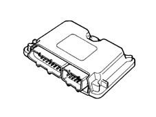
Pins
-
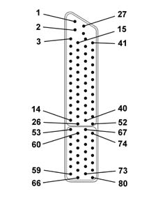
1-3, Not connected 4, Rev counter signal 5, Automatic transmission control unit (coolant temperature) 6-8, Not connected 9, Lambda sensor (negative) 10-12, Not connected 13, Fiat CODE control unit 14, Radiator fan high speed (versions with climate control) 15, Injection system relay go ahead 16, Not connected 17, Engine coolant overheating warning light 18-19, Not connected 20, Lambda sensor (positive) 21-24, Not connected 25, Diagnostic socket (line k) 26, Injection system failure warning light 27, Earth 28, Earth 29, Supply (+30) with fuse 30-34, Not connected 35, Radiator fan low speed request signal 36-39, Not connected 40, Radiator fan low speed (versions with climate control) 41, Air conditioning compressor relay 42-43, Not connected 44, Lambda sensor cable screening 45-46, Not connected 47, Supply (+15) 48, Air conditioning engagement request 49, Not connected 50, Vehicle speed signal 51, Not connected 52, Fuel vapour solenoid valve 53, Rpm sensor (positive) 54, Earth for coolant temperature, air pressure/temperature and butterfly valve position sensors. 55, Intake air temperature signal 56, Knock sensor (positive) 57, Engine idle speed actuator 58, Engine idle speed actuator 59, Ignition coils (cylinders 1-4) 60, Butterfly valve position sensor supply 61, Not connected 62, Engine coolant temperature sensor (positive) 63, Detonation sensor cable screening 64, Engine idle speed actuator 65, Engine idle speed actuator 66, Ignition coils (cylinders 2-3) 67, Rpm sensor (negative) 68, Intake air temperature/pressure sensor supply 69, Not connected 70, Detonation sensor (negative) 71, Injector for cylinder no. 1 72, Injector for cylinder no. 4 73-74, Not connected 75, Intake air pressure signal 76, Butterfly valve position signal 77, Rpm sensor cables screening 78, Injector for cylinder no. 3 79, Injector for cylinder no. 2 80, Not connected
INJECTORS
Specifications:
The twin jet injectors (with the spray at an angle in relation to the injector axis) are specifically designed for engines with 4 valves per cylinder, making it possible to direct the jets towards the two inlet valves.
The injectors are fixed by the fuel manifold, which presses them into their seats in the inlet ducts. They are also secured to the fuel manifold by means of 'safety clips'. Two Viton seals (1) and (2), ensure the seal at the inlet manifold and the fuel manifold.
The fuel is supplied from above (3) the injector, which contains the winding (4) connected to the terminals (5) of the electrical connector (6).
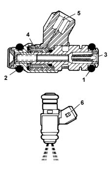
Operation
The jets of fuel, at a differential pressure of 3 bar, come out of the injector and are instantly atomized forming two cones.
The control logic for the injectors is the sequential, phased type, in other words the four injectors are operated according to the engine cylinder inlet sequence, whilst the supply for each cylinder can already start during the expansion stroke and continue until the inlet stroke has already started.
FUEL MANIFOLD
The fuel manifold is produced by aluminium die-casting and incorporates the seats for the injectors.
The fuel manifold is fixed to the inner part of the inlet manifold and its function is to send the fuel to the injectors.
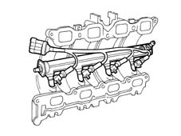
ENGINE COOLANT TEMPERATURE SENSOR
Specifications
It is fitted on the thermostatic cup and measures the temperature of the coolant by means of an NTC thermistor which has a negative resistance coefficient.
Operation
The reference voltage for the NTC element for the injection system is 5 Volt; as the input circuit into the control unit is designed as a voltage divider, this voltage is divided between a resistor located in the control unit and the sensor's NTC resistor. The control unit is thus able to assess the changes in the sensor's resistance via the changes in voltage, and thus obtain the temperature information.
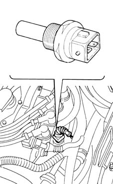
Composition
-
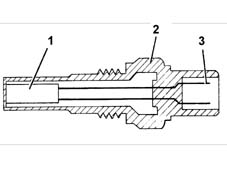
1, NTC resistor 2, Sensor body 3, Electrical connector
-20 °C - 15971 O
-10-°C - 9620 O
0 °C - 5975 O
10 °C - 3816 O
20 °C - 2502 O
25 °C - 2044 O
30 °C - 1679 O
40 °C - 1152 O
50 °C - 807 O
60 °C - 576 O
70 °C - 418 O
80 °C - 309 O
90 °C - 231 O
100 °C - 176 O
DETONATION SENSOR
Specifications
The piezoelectric type detonation sensor is fitted on the cylinder block/crankcase and detects the intensity of the vibrations caused by the detonation in the combustion chambers.
This phenomenon produces a mechanical repercussion on a piezoelectric crystal which sends a signal to the control unit; on the basis of this signal, the control unit reduces the ignition advance until the phenomenon has disappeared. The advance is then gradually restored to the basic value.
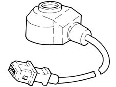
Operation
The molecules of a quartz crystal are electrically polarised.
In rest conditions (A) the molecules do not have a particular direction.
When the crystal is subjected to pressure or an impact (B), they are directed - the higher the pressure to which the crystal is subjected, the more marked their direction. This direction produces a voltage at the ends of the crystal.
A. Rest position
B. Under pressure position
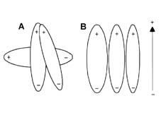
Electrical specifications: resistance: 532-588 ohm at 20°C.
RPM SENSOR
Specifications
It is mounted on the engine block and 'faces' the phonic wheel located on the crankshaft.
It is of the inductive type, i.e. it functions by means of the variation in the magnetic field generated by the passage of the teeth of the flywheel (60-2 teeth).
The fuel injection control unit uses the rpm sensor to:
- determine the speed of rotation
- determine the angle of the crankshaft.
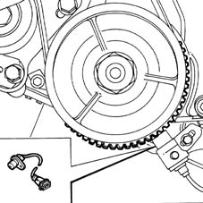
Composition
The sensor consists of a tubular casing (1) which contains a permanent magnet (3) and an electrical winding (2).
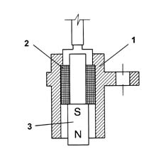
Operation
As the flywheel teeth go past, the magnetic flow produced by the magnet (3) undergoes fluctuations due to the change in the gap.
These fluctuations induce an electromotive force in the winding (2), at the ends of which there is a voltage which alternates between positive (tooth opposite sensor) and negative (gap opposite sensor).
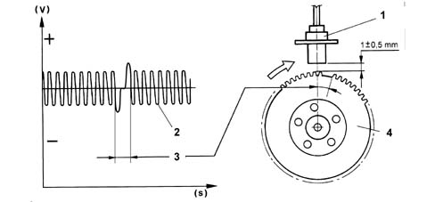
1, Sensor 2, Output signal 3, Signal corresponding to the two missing teeth 4, Crankshaft pulley with flywheel
The peak value of the output voltage from the sensor, provided other factors remain the same, depends on the distance between the sensor and tooth (gap).
The phonic wheel comprises sixty teeth, two of which have been removed to create a reference: the pitch of the wheel thus corresonds to an angle of 6° (360° divided by 60 teeth). The synchronization point is recognized at the end of the first tooth after the space created by the two missing teeth: when this passes under the sensor, the pair of pistons 1-4 of the engine are at 114° before TDC.
Electrical specifications: resistance:1134-1386 ohm at 20°C.
The distance (gap) for obtaining correct signals, between the end of the sensor and the flywheel, should be between 0.5 and 1.5 mm.
THROTTLE BODY
This has the task of metering the amount of air supplied to the engine (and consequently the power developed) according to the request from the driver via the accelerator.
The throttle body is fixed to the intake manifold; the butterfly is opened by means of a non linear linkage which, depending on the pedal travel, produces small butterfly opening angles in the first section of the accelerator pedal travel and, conversely, greater angles with the pedal very depressed.
With the pedal completely released (engine decelerating or idling) the additional air required is supplied by the engine idle speed actuator; under these circumstances, the throttle opening lever comes up against an anti-tamper screw which prevents the throttle from getting stuck in the closed position.
To avoid condensation and the formation of ice which could occur in certain conditions when the outside temperature is very low and/or it is very damp, the throttle body is heated with a small amount of coolant coming from the engine thermostat made to circulate in a chamber inside the actual casing.
The butterfly valve position sensor and the engine idle speed actuator are also fitted on the throttle body.
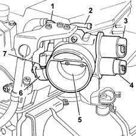
1, Attachment for engine coolant supply pipe 2, Attachment for engine coolant return pipe 3, Engine idle speed actuator 4, Butterfly valve position sensor 5, Butterfly valve 6, Butterfly opening linkage 7, Butterfly valve anti-tamper and adjustment screw
The anti-tamper screw (7) is regulated during the fluxing operation in the factory and should never be tampered with.
THROTTLE POSITION SENSOR
Specifications
This sensor consists of a potentiometer where the moving part is controlled by the butterfly valve spindle.
The potentiometer is in a plastic container which is designed to guarantee the mounting and the correct positioning of the sensor in relation to the butterfly valve.
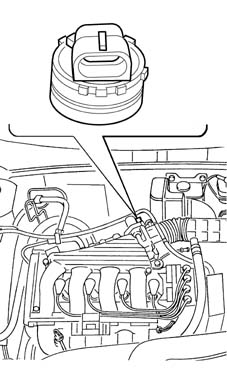
Composition
The potentiometer is of linear type (single ramp); its main characteristics are:
- Total mechanical travel: 110° ± 8°
- Electrical angle: 90° ± 2°
- Temperature operating range: -30°C - +125°C
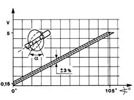
Operation
During operation, the control unit provides the potentiometer with a 5 Volt supply. The parameter measured is the butterfly position from minimum to full opening for the management of the injection.
On the basis of the output voltage, the control unit recognizes the butterfly valve opening condition and suitably corrects the mixture strength.
With the butterfly closed, an electrical voltage signal is sent to the control unit which recognizes the idle and cut-off conditions (distinguishing between them on the basis of the engine speed).
Fixed resistance (between pins A and B) = 1200 ohm
Variable resistance (between pins A and C) = 0 - 1200 ohm ± 20%.
ENGINE IDLE SPEED ACTUATOR (STEPPING MOTOR)
Specifications
The actuator, fixed to the throttle body, consists of:
- An electrical stepping motor with two windings in the stator and a rotor composed of two permanent magnet poles.
- A screw-female screw type reduction gear which transforms the rotary motion in a rectilinear motion.
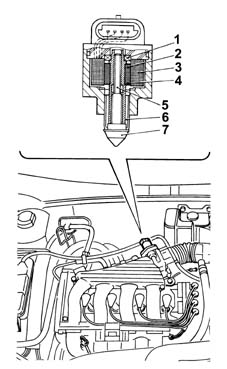
1, Bearing 2, Nutscrew 3, Coils 4, Magnet 5, Screw 6, Anti-rotation splining 7, Shutter
The electrical stepper motor features a high degree of precision and rapid resolution (about 220 steps per second). The impulses sent by the electronic control unit to the engine are transformed from a rotary motion into a linear motion (about 0.04 mm/step) by means of a screw-female screw type mechanism, operating the shutter whose movements alter the section of the by-pass duct.
The constant value of the minimum air flow rate (Q0) is due to the flow under the butterfly valve which is regulated in production and guaranteed by an anti-tamper plug. The maximum flow rate (Q2) is guaranteed by the shutter in the fully retracted position (about 220 steps corresponding to 8.9 mm). The law shown in the graph below applies between these two air flow rate values:
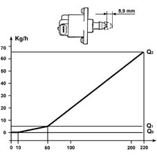
Operation
In order to idle, i.e. with the butterfly (4) completely closed, the engine requires a certain amount of air (Qo) and fuel to overcome the internal friction and sustain its rotation speed.
To the quantity of air (Qo) arriving from the filter which, during idling, flows through the butterfly valve (4) in a closed position, it is necessary to add, when the engine is warming up or when electrical consumers are switched on or outside loads applied (air conditioning etc.), a further quantity of air (Q) to allow the engine to keep the rotation speed constant.
To achieve this result the system uses a stepping motor (1) operated by a circuit (6) inside the injection/ignition electronic control unit which, when operating, moves stem with a shutter (3) which alters the section of the by-pass duct (2) and, consequently, the quantity of air (Qo + Q) drawn in by the engine.
To adjust this type of action, the electronic unit uses the engine angular speed and coolant temperature parameters, coming from the respective sensors.
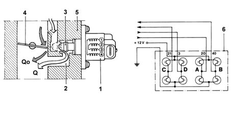
Q, Air flow rate regulated by the actuator (variable) Q0, Air flow rate escaping from the butterfly (constant)
INTAKE AIR TEMPERATURE AND PRESSURE SENSOR
Specifications:
The intake air temperature and pressure sensor is a component which is designed to measure the pressure and the temperature of the air inside the inlet manifold. Both pieces of information are used by the injection control unit to define the quantity of air drawn in by the engine; this information is then used to calculate the injection time and the point of ignition. The sensor is fitted on the inlet manifold.
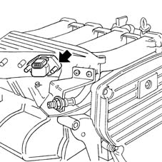
The air temperature sensor consists of an NTC thermistor (Negative Temperature Coefficient). The resistance of the sensor decreases as the temperature increases. The control unit input circuit divides the 5 Volt reference voltage between the sensor resistance and a fixed reference value, obtaining a voltage which is proportional to the resistance and therefore to the temperature.
The sensitive element of the pressure sensor consists of a Wheatstone bridge on a cermamic diaphragm. On one side of the diaphgram is the absolute reference vacuum, whilst the vacuum from the inlet manifold acts on the other side. The (piezoresistive) signal from the distortion suffered by the diaphgram, before being sent to the engine control unit, is amplified by an electronic circuit in the support which also houses the ceramic diaphragm. When the engine is off, the diaphragm bends in accordance with the atmospheric pressure; the altitude information is thus obtained.
When the engine is running, the effect of the vacuum produces a mechanical action on the sensor diaphgram, which bends, altering the resistance value. Since the supply is kept rigorously constant (5V) by the control unit, altering the resistance alters the voltage output value.
-40 (°C) - 49933 ± 13.6% (O)
-20 (°C).- 15701 ± 10.8% (O)
0 (°C) - 5959 ± 8.5% (O)
10 (°C) - 3820 ± 7.4% (O)
20 (°C) - 2509 ± 6.5% (O)
25 (°C) - 2051 ± 6.0% (O)
30 (°C) - 1686 ±6.0% (O)
40 (°C) - 1157 ±5.9% (O)
50 (°C) - 810 ± 5.8% (O)
60 (°C) - 578 ± 5.7% (O)
80 (°C) - 309 ± 5.5% (O)
100 (°C) - 176 ± 5.4% (O)
IGNITION COILS
The coils are fixed, by a bracket, to the camshaft covers and are the closed magnetic circuit type with a core made from silicon steel with a thin gap containing both windings.
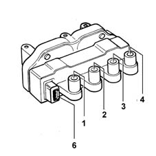
The windings are covered by a pressed plastic container and are insulated through immersion in an epoxide resin and quartz compound which gives them exceptional dielectric, mechanical and thermal properties enabling them to withstand high temperatures. The proximity of the primary winding to the magnetic core reduces the magnetic flow losses optimizing the coupling with the secondary winding.
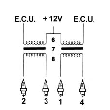
1, H.T. socket for spark plug for cylinder 1 2, H.T. socket for spark plug for cylinder 2 3, H.T. socket for spark plug for cylinder 3 4, H.T. socket for spark plug for cylinder 4 5, L.T. socket for control unit connection 6, Primary circuit 7, Gap 8, Secondary circuit
Primary circuit resistance: 0.44-0.53 ohm at 23°C
Secondary circuit resistance: 4500-5500 ohm at 23°C.
VEHICLE SPEED SENSOR (SOGECO)
This sensor is located at the differential output, by the left driveshaft joint and transmits the vehicle speed to the control unit: the signal is also used for the operation of the speedometer.
The Hall effect sensor transmits 16 pulses/rev; according to the frequency of the impulses it is possible to ascertain the speed of the vehicle.
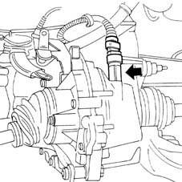
Applies to: engines: 1.6 16v; all production periods; only with equipment: BIPOWER
The Marelli IAW 4GF.2M system belongs to the category of systems integrated with:
- inductive discharge digital electronic ignition
- static distribution
- sequential, phased electronic injection (1-3-4-2).
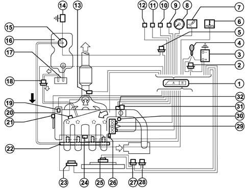
1, Engine control unit 2, Injection system relay 3, Battery 4, Ignition switch 5, Pump relay feed 6, Engine coolant overheating warning light 7, Injection system failure warning light 8, Signal for rev counter 9, Fiat CODE connection 10, Diagnostic equipment connection 11, Climate control connection 12, Petrol/methane selection 13, Lambda sensor 14, Inertia switch 15, Drip tray complete with electric fuel pump, filter and pressure regulator 16, Fuel tank 17, Active charcoal filter 18, Charcoal filter solenoid valve 19, Engine timing sensor 20, Air temperature and pressure sensor 21, Engine rpm and TDC sensor 22, Petrol manifold with injectors 23, Petrol/methane injectors relay 24, Detonation sensor 25, Radiator fan 26, Engine coolant temperature sensor 27, Radiator fan high speed relay operation 28, Radiator fan low speed relay operation 29, Ignition coils 30, Vehicle speed sensor 31, Butterfly valve position sensor 32, Engine idle speed actuator
The system is configured to normally run on methane.
It is possible to switch from methane to petrol:
- when the user wishes, via the switching button located in the passenger compartment;
- automatically through the engine management electronic control unit if the methane in the tank has run out (pressure in the canister below 11 bar) or in recovery conditions when methane operation is not advisable.
In the first case, methane operation is only restored by deactivating the button; in the second case, it takes place automatically when the conditions which caused it no longer exist (e.g., after the canisters have been refilled).
The engine is started up on methane. The engine is only started up on petrol after a complete refilling in order to ensure that the injectors are working properly and the system switches to methane operation after a few seconds. There must always therefore be petrol in the tank. For this reason there are both types of fuel gauge.
System functions are essentially as follows:
- system self-adaptation
- self diagnosis
- recognition of FIAT CODE
- check on cold starting
- check on combustion - Lambda probe
- knock control
- check on enrichment during acceleration
- fuel cut-off during overrunning
- fuel vapour recovery
- limitation of maximum rpm
- fuel supply check
- electric fuel pump
- methane solenoid valves
- connection to the climate control system
- recognition of cylinder position
- Regulation of fuel injection times
- adjustment of ignition advance values
- check and management of idle speed
- check on electric cooling fan
The control unit controls and manages fuel injection so that the stoichiometric ratio (air/fuel) is always at the optimum value.
During idling, the control unit checks:
- the moment of ignition
- the air flow
with the benefit of maintaining correct operation of the engine when the environmental parameters and the applied loads vary.
INJECTION SYSTEM
There are basically two essential conditions that must always be met in the preparation of the air/fuel mixture for the smooth operation of controlled ignition engines, namely:
- the "metering" (air/fuel ratio) must constantly be kept as close as possible to the stoichiometric ratio, so as to ensure the necessary rapidity of combustion, avoiding unnecessary fuel consumption
- the "homogeneity" of the mixture, consisting of petrol vapours, diffused as finely and evenly as possible in the air.
The injection/ignition system uses an indirect measuring system known as the "SPEED DENSITY-LAMBDA" type, in other words the angular rotation speed, the density of the intake air and the control of the mixture strength (feed-back).
In practice the system uses data on the ENGINE SPEED (rpm) and AIR DENSITY (pressure and temperature) to emasure the quantity of air drawn in by the engine.
The quantity of air drawn in by each cylinder, for each engine cycle depends, not only on the density of the intake air, but also on the unit displacement and the volumetric efficiency.
The density of the air refers to that of the air drawn in by the engine and calculated according to the absolute pressure and the temperature, both detected in the inlet manifold.
Volumetric efficiency refers to the parameter relating to the coefficient for filling the cylinders measured on the basis of experimental tests carried out on the engine throughout the entire operating range and then stored in the electronic control unit memory.
Having established the quantity of intake air, the system has to provide the quantity of fuel according to the desired mixture strength.
The end of injection impulse or supply timing is contained in a map stored in the control unit memory and varies according to the engine speed and the pressure in the inlet manifold. In practice, it involves processing which the electronic control unit carries out to command the sequential, phased opening of the four injectors, one per cylinder, for the length of time strictly necessary to form the air/petrol mixture which is closest to the stoichiometric ratio.
The fuel is injected directly into the intake manifold.
Whilst the speed (rpm) and the density of the air (pressure and temperature) are used to measure the quantity of intake air, which when established allows the quantity of fuel to be metered according to the desired mixture strength, the other sensors in the system (coolant temperature, butterfly valve position, battery voltage, etc.) allow the electronic control unit to correct the basic strategy for all engine operating conditions.
It is vital for the air/fuel ratio to be around the stoichiometric value for the correct and prolonged operation of the catalytic silencer and for the reduction of pollutant emissions.
The injection system operation and strategies are basically identical for both petrol and methane operation.
IGNITION SYSTEM
The ignition is of the inductive discharge type, distributorless, with power modules located in the electronic injection/ignition control unit.
The system has two high tension twin outlet coils joined in a single container and connected directly to the spark plugs.
The primary winding for each coil is connected to the power relay (thereby receiving the battery voltage) and to the pins for the electronic control unit for connection to earth.
After the starting stage, the electronic unit manages the basic advance taken from a special map according to the:
- engine rotation speed
- absolute pressure value (mmhg) measured in the inlet manifold.
This advance value is corrected according to the temperature of the engine coolant and the intake air.
The spark plugs for cylinder 1-4 and 2-3 are connected directly (two at a time) by means of high tension leads to the terminals of the coil secondary winding and their connection is in series because the engine head joins them. This solution is also known as the "lost spark" becuse the energy accumulated by the coil is almost exclusively discharged at the electrodes for the spark plug of the cylinder under compression allowing the ignition of the mixture. The other spark is obviously not used, as no mixture is found in the cylinder to ignite, only exhaust gas.
DIAGRAM OF INPUT/OUTPUT INFORMATION FROM THE CONTROL UNIT
-
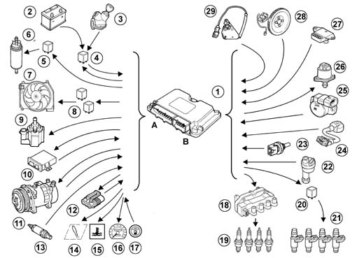
1, Engine control unit 2, Battery 3, Ignition switch 4, Injection system relay 5, Electric pump relay feed 6, Pump 7, Radiator fan 8, Radiator fan relay feed 9, Charcoal filter solenoid valve 10, Fiat CODE connection 11, Climate control connection 12, Diagnostic equipment connection 13, Lambda sensor 14, Injection system failure warning light 15, Engine coolant overheating warning light 16, Signal for rev counter 17, Petrol/methane selection 18, Ignition coil 19, Spark plugs 20, Petrol injectors relay 21, Petrol injectors 22, Vehicle speed sensor 23, Engine coolant temperature sensor 24, Detonation sensor 25, Butterfly valve position sensor 26, Engine idle speed actuator 27, Air temperature and pressure sensor 28, Engine rpm and TDC sensor 29, Engine timing sensor
OPERATING STRATEGIES
System self-adjustment
The control unit has a self-adaptation function which recognizes changes in the engine which occur as a result of bedding-in and ageing processes of both components and the engine itself.
These changes are stored in the form of modifications to the basic mapping, and their purpose is to adapt the operation of the system to the gradual alterations in the engine and components compared with their characteristics when new.
This self-adaptation function also makes it possible to even out inevitable differences (due to production tolerances) in any replaced components.
From the exhaust gas analysis, the control unit changes the basic mapping in relation to the original characteristics of the new engine
The self-adaptation parameters are not cancelled if the battery is disconnected.
Self-diagnosis
The system has an autodiagnostic function which recognizes, memorizes and signals any failures.
If a fault is detected at the sensors or actuators, the signal reconstruction strategies (recovery) are immediatedly activated to guarantee the operation of the engine at an acceptable level without adverse effects. The vehicle can therefore be driven to a service centre for repair.
Recognition of fiat code
When the control unit receives the ignition "ON" signal, it dialogues with the Fiat CODE control unit to obtain starting enablement.
Communication takes place via the dedicated bidirectional serial diagnostic line which connects the two control units.
Starting and post-starting
During starting it is not possible to instantly recognize the engine timing and consequently it is not possible to implement the timed injection for the first injection for each cylinder.
When the engine is first running an initial simultaneous (full-group) injection is carried out because the considerable fluctuations in the rotation speed do not allow the correct calculation of the injection stage; it is only later that the injection becomes phased.
The "basic" injection time is increased by a multiplication coefficient for the entire time the engine is driven by the starter motor.
After starting, the coefficient is gradually reduced until it disappears within a certain period; the lower the engine temperature, the longer this period.
Operation when cold
The electronic control unit recognizes this condition on the basis of the coolant temperature signal, increasing the basic injection time.
Whilst the engine is warming up, the electronic control unit also operates the stepping motor which determines the quantity of air needed to ensure that the engine does not cut out.
Operation in full load conditions
Operation in full load conditions is detected, by the control unit, through the values supplied by the butterfly position and absolute pressure sensors.
In full load conditions, the basic injection time must be increased to obtain the maximum power supplied by the engine.
Operation in deceleration conditions
During this stage the engine has two strategies:
- A negative, transitory strategy to keep the quantity of fuel supplied to the engine at the stoichiometric value (less pollution). This stage is recognized by the control unit when the butterfly potentiometer signal goes from a high voltage reading to a lower one.
- A soft accompaniment strategy at the lower speed (dash-pot) to lessen the variation in the torque supplied (reduced engine braking).
Barometric correction
The atmospheric pressure varies according to the altitude creating a variation in the volumetric efficiency which requires the correction of the basic mixture strength (injection time).
The correction of the injection time depends on the variation in altitude and is automatically updated by the electronic control unit each time the engine is switched off and in certain butterfly position and rpm conditions (typically at low speeds and with the butterfly wide open) (dynamic adjustment of barometric correction).
Operation in cut-off conditions
The cut-off strategy is implemented when the control unit recognizes the butterfly valve in the idle position (butterfly potentiometer signal) and the engine speed exceeds 1350 rpm. The control unit only enables the cut-off when the engine temperature exceeds 0° C.
The recognition of the butterfly valve in a non closed position or the engine speed below 1270 rpm enables the supply to the engine.
For very high speeds the cut-off is implemented even when the butterfly is not completely closed, but when the pressure in the inlet manifold is particularly low (partial cut-off).
Operation in acceleration conditions
During this stage, the control unit increases the quantity of fuel requested by the engine as appropriate (to achieve maximum torque) according to the signals coming from the following components:
- throttle potentiometer;
- Rpm and T.D.C. sensor
The "basic" injection time is multiplied by a coefficient which depends on the temperature of the engine coolant, the opening speed of the accelerator butterfly and the increase in pressure in the inlet manifold.
If the sharp variation in the injection time is calculated when the injector is already closed, the control unit reopens the injector (extra pulse) in order to compensate the mixture strength extremely quickly; the subsequent injections are already increased on the basis of the coefficients mentioned previously.
Protection against excess rpm
When the engine rotation speed exceeds 6700 rpm for more than 10 seconds or reaches the "limit" of 6900 rpm, set by the manufacturer, the engine finds itself operating in "critcal" conditions.
When the electronic control unit recognizes that the above speed has been exceeded, it prevents the operation of the injectors.
When the rotation speed returns to a non critical value, the operation is resumed.
Electric fuel pump operation
The electric fuel pump is controlled by the engine control unit by means of a relay.
The pump is stopped:
- if the engine speed goes below about 50 rpm
- after a certain period (about 5 seconds) with the ignition switch in the ON position without the engine being started up (timed go ahead)
- if the inertia switch is operated
Canister solenoid valve operation
The canister solenoid valves are operated by the engine management control unit by means of a relay.
The solenoid valves close:
- if the engine speed goes below about 50 rpm
- if the engine speed goes below about 50 rpm
- after a certain period (about 5 seconds) with the ignition switch in the ON position without the engine being started up (timed go ahead)
- if the inertia switch is operated
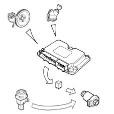
Injector operation
The operation of the injectors is the sequential, phased type. However, during starting the injectors are operated once in parallel (full-group).
The timing of the injector operation varies according to the engine speed and pressure of the inlet air in order to improve the filling of the cylinders with advantages in terms of consumption, driveability and pollution.
The injectors are electrically supplied by means of a specific twin relay: the engine management control unit closes the contacts for the section relating to the methane or petrol injectors according to specific situations, whilst the negative signal is common to the injectors.
Control of knock
This strategy has the task of detecting the presence of detonation (engine knock) by processing the signal coming from the relevant sensor. The strategy continuously compares the signal coming from the sensor with a threshold value, which, in turn, is continuously updated to take account of background noise and ageing of the engine.
If the system recognizes the presence of detonation, the strategy reduces the ignition advance until the phenomenon disappears. Later, the advance is gradually restored to the basic value or until the phenomenon occurs again. In particular, advance increases are implemented gradually, whilst reductions are implemented immediately.
Under acceleration conditions, a higher threshold is used to take account of the increased engine noise under such conditions.
The strategy also features a self-adaptation function which temporarily memorizes the reductions in the advance that may be continuously repeated, in order to adjust the advance to the different engine operating conditions (for example, the use of a low octane rating fuel). The strategy is capable of restoring the advance to the threshold value memorized when the conditions which have caused the reduction no longer exist.
Management of radiator fan
The control unit directly controls the operation of the radiator fan according to the temperature of the engine coolant and the engagement of the climate control system.
The fan is switched on when the temperature exceeds 98°C (1st speed) and 101°C (2nd speed). The switching off takes place with a hysteresis of 2°C below the engagement threshold.
The high and low speed functions are managed by the intervention of special relays in the climate control system control unit and are operated by the control unit.
Management of the engine idle
The general aim of this strategy is to keep the engine idling at around the value memorized (engine warm: 850 rpm); the position of the actuator depends on the following engine conditions:
- Starting stage
- When the key is inserted, the position of the actuator depends on the temperature of the engine coolant and the voltage of the battery (open-loop position).
- Warming up stage
- The engine speed is corrected, particularly on the basis of the engine coolant temperature.With the engine at operating temperature, the idle management depends on the signal coming from the engine rpm sensor; when external loads are switched on, the control unit supports the idling.
- Deceleration stage
- In deceleration conditions outside of idling, the control unit controls the position of the engine idle speed actuator by means of a special flow rate curve (dash-pot curve), in other words it slows down the return of the shutter towards it housing, improving the engine braking effect.
Management of fuel vapour recirculation (petrol)
This strategy controls the position of the vapour cut out solenoid valve in the following way:
- during starting, the solenoid valve remains closed preventing the fuel vapours from excessively enriching the mixture; this condition persists until the engine coolant temperature reaches 65° C;
- with the engine at operating temperature, the electronic control unit sends the solenoid valve a square wave signal (duty-cycle operation) and the opening is modulated.
In this way the control unit controls the quantity of fuel vapours sent to the inlet, preventing considerable variations in the mixture strength.
In the operating conditions listed below:
- butterfly valve in closed position
- engine speed below 1500 rpm
- inlet manifold pressure below the limit calculated by the control unit depending on the number of revs,
the operation of the solenoid valve is inhibitied, maintaining the same closed position; this improves the engine operation.
Management of climate control system
The injection/ignition control unit is connected to the climate control system in that:
- it receives the request to switch on the compressor and operate the related interventions (additional air);
- it gives the go ahead to switch on the compressor, when the conditions planned by the strategies are verified;
- it receives information on the state of the four stage pressure switch and operates the appropriate interventions (radiator fan operation).
If the engine is idling, the control unit increases the flow rate of the air passing from the idle actuator before the compressor is switched on and, viceversa, it returns the actuator to the normal position after the compressor is switched off.
The control unit automatically controls the disengagement of the compressor:
- at engine coolant temperatures above a certain level
- at engine speeds below 750 rpm.
The control unit temporarily controls the disengagement of the compressor (for a few seconds):
- during high power requests from the engine (strong acceleration)
- during engine take off:
IAW 49F INJECTION/IGNITION CONTROL UNIT
The engine unit is fitted in the engine compartment and is capable of withstanding high temperatures.
It is a digital type with a microprocessor, featuring a high calculation capacity, precision, reliability, versatility and low energy consumption and is maintenance-free.
The task of the electronic control unit is to process the signals coming from the various sensors through the application of software algorhythms and control the operation of the actuators (in particular, the injectors, ignition coils and idle actuator) in order to ensure optimum engine operation.
The adoption of the Fiat CODE does not allow control units to be exchanged between cars.
Control unit pin out
-
1, N.c. 2, N.c. 3, N.c. 4, Rev counter signal 5, N.c. 6, N.c. 7, N.c. 8, N.c. 9, Lambda sensor (negative) 10, N.c. 11, N.c. 12, N.c. 13, Fiat CODE two-way line 14, High speed fan relay feed 15, Low relay feed 16, N.c. 17, Engine coolang overheating warning light 18, N.c. 19, N.c. 20, Lambda sensor (positive) 21, N.c. 22, N.c. 23, N.c. 24, N.c. 25, Diagnostic socket (line k) 26, Injection system failure warning light 27, Power control unit earth 28, Power control unit earth 29, Control unit supply (+12V Batt.) 30, Methane pressure sensor supply 5V 31, N.c. 32, N.c.33. 33, Methane pressure sensor earth 34, N.c. 35, Request to engage low speed fan 36, N.c. 37, N.c. 38, N.c. 39, N.c. 40, Low speed fan relay feed 41, Air conditioning compressor relay 42, N.c. 43, N.c. 44, Lambda sensor cable screening 45, N.c. 46, Gas pressure signal 47, Key on signal 48, Air conditioning engagement request 49, N.c. 50, Vehicle speed signal 51, N.c. 52, N.c. 53, Rpm sensor (positive) 54, Sensor earth 55, Intake air temperature signal 56, Detonation sensor (positive) 57, Stepper phase C operation 58, Stepper phase D operation 59, Ignition coils (cylinders 1-4) 60, Butterfly valve position sensor supply +5V 61, N.c. 62, Engine coolant temperature sensor (positive) 63, Detonation sensor cable screening 64, Stepper phase B operation 65, Stepper phase A operation 66, Ignition coils (cylinders 2-3) 67, Rpm sensor (negative) 68, Absolute pressure and timing sensor supply 69, Timing sensor signal 70, Detonation sensor (negative) 71, Injector for cylinder no. 1 72, Injector for cylinder no. 4 73, N.c. 74, N.c. 75, Pressure sensor signal 76, Butterfly valve position signal 77, Rpm sensor cables screening 78, Injector for cylinder no. 3 79, Injector for cylinder no. 2 80, N.c.
PETROL INJECTORS
Construction features
The twin jet injectors (with the spray at an angle in relation to the injector axis) are specifically designed for engines with 4 valves per cylinder, making it possible to direct the jets towards the two inlet valves.
The injectors are fixed by the fuel manifold, which presses them into their seats in the inlet ducts. They are also secured to the fuel manifold by means of "safety clips". Two viton seals (1) and (2), ensure the seal at the inlet manifold and the fuel manifold.
The fuel is supplied from above (3) the injector, which contains the winding (4) connected to the electrical connector (6) terminals (5).
Operation
The jets of fuel, at a differential pressure of 3 bar, come out of the injector and are instantly atomized forming two cones.
The control logic for the injectors is the sequential, phased type, in other words the four injectors are operated according to the engine cylinder inlet sequence, whilst the supply for each cylinder can already start during the expansion stroke and continue until the inlet stroke has already started.
changes in voltage and thereby obtain temperature information.
The fuel manifold is produced by aluminium die-casting and incorporates the seats for the injectors.
The fuel manifold is fixed to the inner part of the inlet manifold and its function is to send the fuel to the injectors.
ENGINE COOLANT TEMPERATURE SENSOR
Construction features
This is mounted on the thermostatic cup, and it measures the coolant temperature by means of an NTC thermistor with a negative resistance coefficient.
Operation
The reference voltage for the NTC element for the injection system is 5 Volt; because the control unit input circuit is designed as a voltage divider, this voltage is divided between a resistance in the control unit and the sensor NTC resistance. The control unit is thus able to assess the changes in the sensor's resistance via the changes in voltage, and thus obtain the temperature information.
Composition
-
1, NTC resistor 2, Sensor body 3, Electrical connector
Electrical specifications
°C, Ω
-20, 15971
-10, 9620
0, 5975
10, 3816
20, 2502
25, 2044
30, 1679
40, 1152
50, 807
60, 576
70, 418
80, 309
90, 231
100, 176
DETONATION SENSOR
Construction features
The piezoelectric knock sensor is mounted on the engine block, and it detects the intensity of vibrations caused by knocking in the combustion chambers.
This phenomenon produces a mechanical repercussion on a piezoelectric crystal which sends a signal to the control unit; on the basis of this signal, the control unit reduces the ignition advance until the phenomenon has disappeard. The advance is then gradually restored to the basic value.
Operation
The molecules of a quartz crystal feature electrical polarization.
In rest conditions (A) the molecules do not have a particular direction.
When the crystal is subjected to pressure or an impact (B), they are directed - the higher the pressure to which the crystal is subjected, the more marked their direction. This direction produces a voltage at the ends of the crystal.
A. Rest position
B. Under pressure position
Electrical specifications: resistance: 532-588 ohm at 20°C.
RPM SENSOR
Construction features
It is mounted on the engine block and "faces" the phonic wheel located on the crankshaft.
It is of the inductive type, i.e. it functions by means of the variation in the magnetic field generated by the passage of the teeth of the flywheel (60-2 teeth).
The fuel injection control unit uses the rpm sensor to:
- determine the speed of rotation
- determine the angle of the crankshaft.
Composition
The sensor consits of a tubular casing (1) which contains a permanent magnet (3) and an electrical winding (2).
Operation
As the flywheel teeth go past, the magnetic flow produced by the magnet (3) undergoes fluctuations due to the change in the gap.
These fluctuations induce an electromotive force in the winding (2), at the ends of which there is a voltage which alternates between positive (tooth opposite sensor) and negative (gap opposite sensor). The peak value of the output voltage from the sensor, provided other factors remain the same, depends on the distance between the sensor and tooth (gap).
The phonic wheel comprises sixty teeth, two of which have been removed to create a reference: the pitch of the wheel thus corresonds to an angle of 6° (360° divided by 60 teeth). The synchronization point is recognized at the end of the first tooth after the space created by the two missing teeth: when this passes under the sensor, the pair of pistons 1-4 of the engine are at 114 before TDC.
The recommeded gap for obtaining correct signals, between the end of the sensor and the flywheel, must be between 0.5 and 1.5 mm.
1, Sensor 2, Output signal 3, Signal corresponding to the two missing teeth 4, Crankshaft pulley with flywheel
TIMING SENSOR
Construction features
In addition to the rpm and TDC signal, the electronic unit also uses another signal to determine the engine timing.
The signal sent to the control unit is produced by a Hall effect sensor (2), fixed by bolts (1), by the inlet side camshaft drive puley (3).
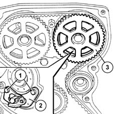
Operation
A semiconducting layer, through which current passes, immersed in a perpendicular magnetic field (force lines perpendicular to the current direction), generates at its ends a difference in potential known as Hall voltage.
If the intensity of the current remains constant, the voltage generated depends only on the intensity of the magnetic field; it is therefore sufficient for the intensity of the magnetic field to vary periodically to obtain a modulated electrical signal, whose frequency is proportional to the rate at which the magnetic field changes.
To obtain this change, a metal ring (1) (the inside of the pulley) with a gap passes through the sensor (2). During its movement, the metal part of the ring covers the sensor, blocking the magnetic field and resulting in a low output signal; viceversa when the sensor is level with the gap and so with the presence of the magnetic field, it generates a high signal.
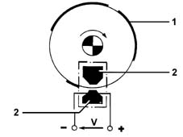
THROTTLE POSITION SENSOR
Construction features
This sensor consists of a potentiometer where the moving parti s controlled by the butterfly valve shaft.
The potentiometer is in a plastic container which is designed to guarantee the mounting and the correct positioning of the sensor in relation to the butterfly valve.
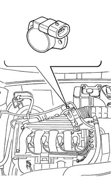
Composition
Linear type potentiometer (single track); its main features are:
- Total mechanical travel: 110° ± 8°
- Electrical angle: 90° ± 2°
- Temperature operating range: -30°C - +125°C
Operation
During operation, the control unit provides the potentiometer with a 5 Volt supply. The parameter measured is the butterfly position from minimum to full opening for the management of the injection.
On the basis of the output voltage, the control unit recognizes the butterfly valve opening condition and suitably corrects the mixture strength.
With the butterfly closed, an electrical voltage signal is sent to the control unit which recognizes the idle and cut-off conditions (distinguishing between them on the basis of the engine speed).
Electrical specifications
Fixed resistance (between pins A and B) = 1200 ohm
Variable resistance (between pins A and C) = 0 - 1200 ohm ± 20%.
ENGINE IDLE SPEED ACTUATOR (STEPPING MOTOR)
Construction features
The electrical stepping motor features a high degree of precision and rapid resolution (about 220 steps per second). The impulses sent by the electronic control unit to the engine are transformed from a rotary motion into a linear motion (about 0.04 mm/step) by means of a screw-female screw type mechanism, operating the shutter whose movements alter the section of the by-pass duct.
The constant value of the minimum air flow rate (Qo) is due to the flow under the butterfly valve which is regulated in production and guaranteed by an anti-tamper plug. The maximum flow rate (Q2) is guaranteed by the shutter in the fully retracted position (about 220 steps corresponding to 8.9 mm). The law shown in the graph below applies between these two air flow rate values.
Composition
The actuator, fixed to the butterfly casing, consists of:
- An electrical stepping motor with two windings in the stator and a rotor composed of two permanent magnet poles.
- A screw-female screw type reduction gear which transforms the rotary motion in a rectilinear motion.
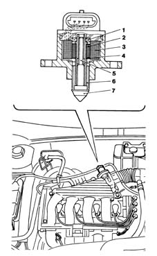
1, Bearing 2, Female screw 3, Coils 4, Magnet 5, Screw 6, Anti-rotation splining 7, Shutter
Operation
In order to idle, i.e. with the butterfly (4) completely closed, the engine requires a certain amount of air (Qo) and fuel to overcome the internal friction and sustain its rotation speed.
To the quantity of air (Qo) arriving from the filter which, during idling, flows through the butterfly valve (4) in a closed position, it is necessary to add, when the engine is warming up or when electrical consumers are switched on or outside loads applied (air conditioning etc.), a further quantity of air (Q) to allow the engine to keep the rotation speed constant.
To achieve this result the system uses a stepping motor (1) operated by a circuit (6) inside the injection/ignition electronic control unit which, when operating, moves stem with a shutter (3) which alters the section of the by-pass duct (2) and, consequently, the quantity of air (Qo + Q) drawn in by the engine.
To adjust this type of action, the electronic unit uses the engine angular speed and coolant temperature parameters, coming from the respective sensors.
Q, Air flow rate regualted by the actuator (variable) Qo, Air flow rate coming from the butterfly (constant)
INTAKE AIR TEMPERATURE AND PRESSURE SENSOR
Construction features
The intake air temperature and pressure sensor is a component which is designed to measure the pressure and the temperature of the air inside the inlet manifold. Both pieces of information are used by the injection control unit to define the quantity of air drawn in by the engine; this information is then used to calculate the injection time and the point of ignition. The sensor is fitted on the inlet manifold.
The air temperature sensor consists of an NTC thermistor (Negative Temperature Coefficient). The resistance of the sensor decreases as the temperature increases. The control unit input circuit divides the 5 Volt reference voltage between the sensor resistance and a fixed reference value, obtaining a voltage which is proportional to the resistance and therefore to the temperature.
The sensitive element of the pressure sensor consits of a Wheatstone bridge on a cermamic diaphragm. On one side of the diaphgram is the absolute reference vacuum, whilst on the other side there is the vacuum from the inlet manifold. The (piezoresistive) signal from the distortion suffered by the diaphgram, before being sent to the engine control unit, is amplified by an electronic circuit in the support which also houses the ceramic diaphragm. With the engine switched off, the diaphragm bends according to the value of the atmospheric pressure; with the key inserted, the exact altitude is given.
When the engine is running, the effect of the vacuum produces a mechanical action on the sensor diaphgram, which bends, altering the resistance value. Since the supply is kept rigourously constant (5V) by the control unit, altering the resistance, alters the voltage output value.
Electrical specifications
Temperature (°C), Resistance (Ω)
-40, 49933 ± 13,6%
-20, 15701 ± 10,8%
0, 5959 ± 8,5%
10, 3820 ± 7,4%
20, 2509 ± 6,5%
25, 2051 ± 6,0%
30, 1686 ±6,0%
40, 1157 ±5,9%
50, 810 ± 5,8%
60, 578 ± 5,7%
80, 309 ± ,5,5%
100, 176 ± 5,4%
IGNITION COILS
The coils are fixed, by a bracket, to the camshaft covers and are the closed magnetic circuit type with a core made from silicon steel with a thin gap containing both windings.
The windings are covered by a pressed plastic container and are insulated through immersion in an epoxide resin and quartz compound which gives hem exceptional dielectric, mechanical and thermal properties enabling them to withstand high temperatures. The proximity of the primary winding to the magnetic core reduces the magnetic flow losses optimizing the coupling with the secondary winding.
1, H.T. socket for spark plug for cylinder 1 2, H.T. socket for spark plug for cylinder 2 3, H.T. socket for spark plug for cylinder 3 4, H.T. socket for spark plug for cylinder 4 5, L.T. socket for control unit connection 6, Primary circuit 7, Gap 8, Secondary circuit
Electrical specifications
Primary circuit resistance: 0.44-0.53 ohm at 23°C
Secondary circuit resistance: 4500-5500 ohm at 23°C.
VEHICLE SPEED SENSOR
Construction features
This sensor is located at the differential output, by the left driveshaft joint and transmits the vehicle speed to the control unit: the signal is also used for the operation of the speedometer.
The sensor is the Hall effect type: it calculates the speed of the vehicle on the basis of the frequency of the impulses.